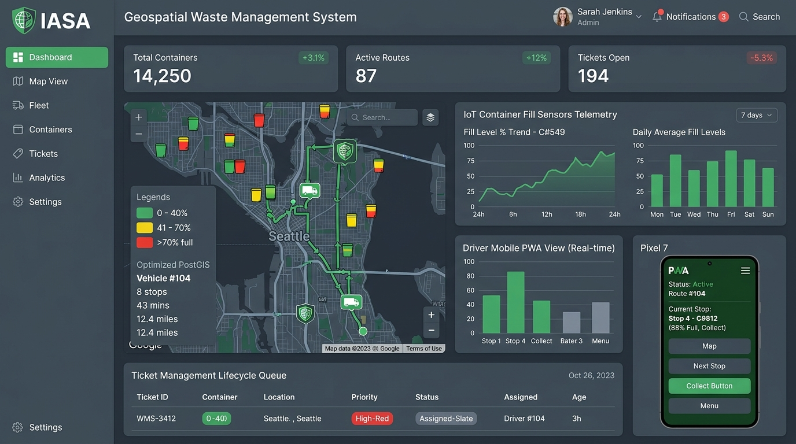
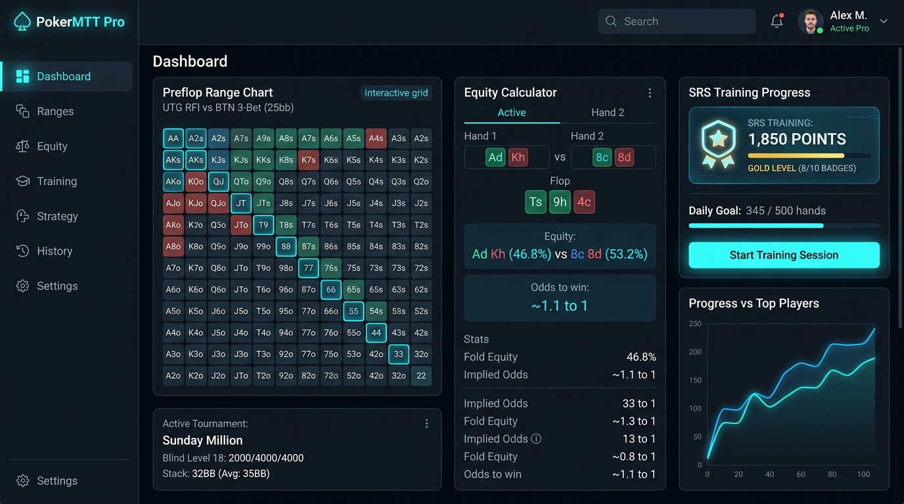
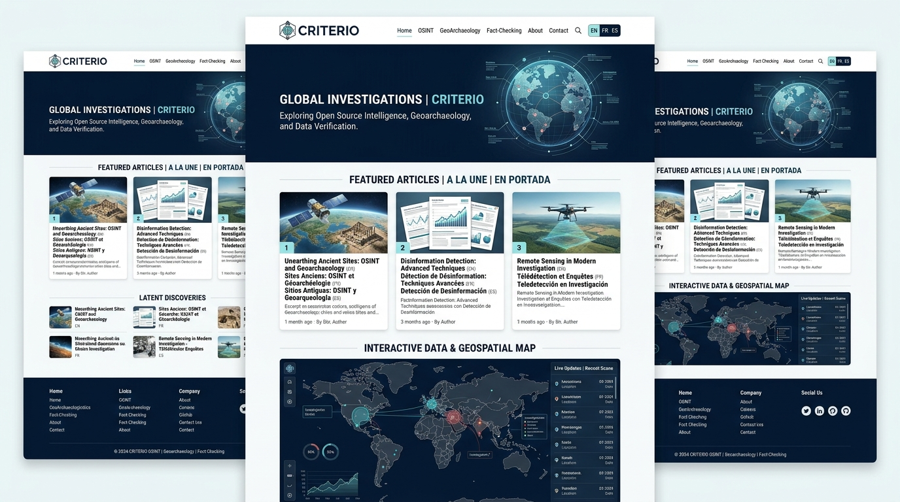

Cédric Bernardin
Professeur de FLE | Traducteur | Concepteur Pédagogique Profesor de FLE | Traductor | Diseñador Pedagógico French Teacher (FLE) | Translator | Instructional Designer
Profil Perfil Profile
Professionnel passionné et polyvalent avec plus de 15 ans d'expérience internationale dans l'enseignement du français (FLE), la traduction spécialisée et la conception de produits numériques et touristiques. Expert dans la création de programmes engageants, le coaching à fort impact et l'intégration des technologies éducatives et de l'intelligence artificielle pour optimiser l'apprentissage. Profesional apasionado y polivalente con más de 15 años de experiencia internacional en la enseñanza del francés (FLE), traducción especializada y diseño de productos digitales y turísticos. Experto en la creación de programas atractivos, el coaching de alto impacto y la integración de tecnologías educativas e inteligencia artificial para optimizar el aprendizaje. Passionate and versatile professional with over 15 years of international experience in French teaching (FLE), specialized translation, and digital & tourism product design. Expert in designing engaging curricula, high-impact coaching, and integrating educational technologies and AI to optimize learning outcomes.
Compétences Competencias Skills
Pédagogie Pedagogía Pedagogy
Enseignement du FLE, Ingénierie Pédagogique, Pédagogie par Projet, Différenciation, EdTech. Enseñanza de FLE, Ingeniería Pedagógica, Pedagogía por Proyectos, Diferenciación, EdTech. FLE Teaching, Instructional Design, Project-Based Learning, Differentiation, EdTech.
Linguistique Lingüística Linguistics
Traduction Experte (Espagnol <> Français), Interprétariat, Révision et Correction de textes. Traducción Experta (Español <> Francés), Interpretación, Revisión y Corrección de textos. Expert Translation (Spanish <> French), Interpreting, Proofreading, and Editing.
Gestion de Projet Gestión de Proyectos Project Management
Management de Projets, Consulting, Conception de Produits Touristiques et Culturels. Gestión de Proyectos, Consultoría, Diseño de Productos Turísticos y Culturales. Project Management, Consulting, Touristic & Cultural Product Design.
Techniques & Numériques Técnicas y Digitales Technical & Digital
Création de Contenu, Administration WordPress, Outils LMS & TBI, IA Générative appliquée à l'apprentissage. Creación de Contenido, Administración WordPress, LMS y PDI, IA Generativa aplicada al aprendizaje. Content Creation, WordPress Administration, LMS & IWB tools, Generative AI for education.
Formation Formación Education
Certificat Professionnel | Analyse de Données Certificado Profesional | Análisis de Datos Professional Certificate | Data Analytics
Google | Coursera
En cours (2026) En curso (2026) In progress (2026)
Master 2 | FLE
Université des Antilles
2016 - 2018
Master 2 | Management
SKEMA Business School
2002 - 2006
Classe Préparatoire HEC
Lycée Gay Lussac, Limoges
2000 - 2002
Baccalauréat Scientifique (S) Bachillerato Científico (S) Scientific Baccalaureate (S)
Mention Assez Bien Mención "Assez Bien" Honors (Assez Bien)
2000
Expérience Professionnelle Experiencia Profesional Professional Experience
Coach en Expression Orale Coach en Expresión Oral Speaking & Conversation Coach
Septembre 2025 - Présent Septiembre 2025 - Presente September 2025 - PresentFrench Immersion (par French Teacher Carlito) | En LigneEn LíneaOnline
Conduite de sessions de conversation intensives et d'immersion orale à destination d'un public international d'apprenants intermédiaires et avancés. Conception d'activités communicatives dynamiques axées sur la fluidité, le dépassement de l'anxiété langagière et le perfectionnement phonétique. Utilisation de supports authentiques et de méthodologies innovantes développées en synergie avec la vision éducative de la plateforme. Facilitación de sesiones de conversación intensivas e inmersión lingüística dirigidas a estudiantes internacionales de niveles intermedio y avanzado. Diseño de actividades comunicativas enfocadas en la fluidez oral, la superación de la barrera del idioma y el perfeccionamiento fonético. Uso de materiales auténticos en colaboración con la visión educativa de la plataforma. Facilitating intensive conversational coaching and speaking immersion sessions for intermediate to advanced international French learners. Crafting dynamic communicative activities targeting fluency, speaking confidence, and pronunciation enhancement. Leveraging authentic cultural resources in line with the platform's immersive teaching methodology.
Professeur de Français Profesor de Francés French Teacher
Août 2025 - Présent Agosto 2025 - Presente August 2025 - PresentAlliance Française de Mérida
Enseignement du français général et de spécialité (adultes, adolescents, professionnels). Conception de ressources et animation d'activités culturelles. Enseñanza de francés general y especializado (adultos, adolescentes, profesionales). Diseño de recursos y dinamización de actividades culturales. Teaching general and specialized French (adults, teenagers, professionals). Designing educational resources and coordinating cultural activities.
Professeur pour le Diplomado “Pays Européens” Profesor para el Diplomado “Países Europeos” Professor for the "European Countries" Diploma
Février 2025 - Présent Febrero 2025 - Presente February 2025 - PresentUniversidad Anáhuac Mayab | À distanceA distanciaRemote
Enseignement en espagnol d'un module de 24 heures sur l'histoire et la culture de différents pays (France, Pays-Bas, Belgique, Royaume-Uni, Irlande, Suisse, Monaco, Luxembourg, Liechtenstein) pour des professionnels et étudiants de haut niveau. Impartición en español de un módulo de 24 horas sobre la historia y cultura de diversos países (Francia, Países Bajos, Bélgica, Reino Unido, Irlanda, Suiza, Mónaco, Luxemburgo, Liechtenstein) para profesionales y estudiantes de alto nivel. Teaching a 24-hour course in Spanish on the history and culture of European countries (France, Netherlands, Belgium, United Kingdom, Ireland, Switzerland, Monaco, Luxembourg, Liechtenstein) for high-achieving professionals and students.
Professeur de Français Profesor de Francés French Teacher
Février 2020 - Présent Febrero 2020 - Presente February 2020 - PresentEnes Mérida, UNAM
Cours collectifs de FLE et d'expression orale pour les étudiants universitaires. Intégration active de projets technologiques et d'outils d'IA pour personnaliser le suivi. Clases grupales de FLE y expresión oral para estudiantes universitarios. Integración activa de proyectos tecnológicos y herramientas de IA para personalizar el seguimiento. Conducting group FLE and oral communication classes for university students. Actively integrating tech projects and AI tools to deliver personalized student follow-ups.
Professeur de Français Profesor de Francés French Teacher
Octobre 2022 - Décembre 2025 Octubre 2022 - Diciembre 2025 October 2022 - December 2025tuSpeaking | En LigneEn LíneaOnline
Cours individuels d'expression écrite et orale orientés business. Évaluation continue et conception de parcours de formation sur mesure pour cadres et dirigeants d'entreprises. Clases individuales de expresión escrita y oral con enfoque empresarial. Evaluación continua y diseño de planes de estudio a la medida para ejecutivos y directivos de empresas. One-on-one business-focused oral and written expression coaching. Delivering continuous assessments and custom educational paths for corporate executives and leaders.
Professeur de Français Profesor de Francés French Teacher
Janvier 2021 - Juin 2025 Enero 2021 - Junio 2025 January 2021 - June 2025Universidad Anáhuac Mayab
Dispense de cours de langue française du niveau débutant à avancé. Élaboration d'outils d'évaluation et de supports académiques transversaux. Impartición de clases de francés desde nivel principiante hasta avanzado. Desarrollo de herramientas de evaluación y materiales académicos transversales. Teaching French classes from beginner to advanced levels. Creating evaluation tools and cross-disciplinary academic materials.
Traducteur Indépendant (Espagnol-Français) Traductor Independiente (Español-Francés) Freelance Translator (Spanish-French)
Septembre 2010 - Présent Septiembre 2010 - Presente September 2010 - PresentFreelance | Mexique
Traduction spécialisée d'ouvrages culturels (civilisation maya, histoire), de guides touristiques et de documents officiels ou légaux. Traducción especializada de obras culturales (civilización maya, historia), guías turísticas y documentos oficiales o legales. Specialized translation of cultural literature (Mayan civilization, history), tour guides, and official or legal documents.
Créateur de Contenus Pédagogiques Creador de Contenidos Pedagógicos Educational Content Creator
Février 2020 - Décembre 2020 Febrero 2020 - Diciembre 2020 February 2020 - December 2020e-Meent
Conception et élaboration de ressources pédagogiques multimédias et de parcours d'apprentissage en ligne. Diseño y desarrollo de recursos pedagógicos multimedia y rutas de aprendizaje en línea. Designing and developing multimedia educational resources and online learning pathways.
Professeur de FLE Profesor de FLE FLE Teacher
Janvier 2019 - Juin 2020 Enero 2019 - Junio 2020 January 2019 - June 2020Colégio Teresiano
Enseignement du français pour enfants et adolescents, développement d'activités ludiques et communicatives. Enseñanza del francés para niños y adolescentes, desarrollo de actividades lúdicas y comunicativas. Teaching French to kids and teenagers, designing fun and communicative learning activities.
Professeur de Français Profesor de Francés French Teacher
Septembre 2013 - Août 2019 Septiembre 2013 - Agosto 2019 September 2013 - August 2019UNAM CEPHCIS
Cours de français universitaire de tous niveaux. Préparation aux examens officiels et promotion de la culture francophone. Clases de francés universitario en todos los niveles. Preparación para exámenes oficiales y promoción de la cultura francófona. University French classes for all levels. Preparation for official exams and promotion of French culture.
Concepteur de Circuits Touristiques & Guide Diseñador de Circuitos Turísticos y Guía Tour Designer & Guide
Novembre 2009 - Janvier 2016 Noviembre 2009 - Enero 2016 November 2009 - January 2016ALTER A.C. (Co-fondateur - Association d'Écotourisme) ALTER A.C. (Co-fundador - Asociación de Ecoturismo) ALTER A.C. (Co-founder - Ecotourism Association)
Création et gestion de voyages alternatifs axés sur l'écotourisme et la rencontre culturelle dans la péninsule du Yucatán. Creación y gestión de viajes alternativos centrados en el ecoturismo y el intercambio cultural en la península de Yucatán. Creating and managing alternative travel experiences focused on ecotourism and cultural exchange in the Yucatan peninsula.
Professeur de Français Profesor de Francés French Teacher
Jan. 2015 - Déc. 2016 & Août 2007 - Mars 2009 Ene. 2015 - Dic. 2016 & Ago. 2007 - Mar. 2009 Jan. 2015 - Dec. 2016 & Aug. 2007 - Mar. 2009Alliance Française de Mérida
Enseignement du français général et professionnel. Animation d'ateliers culturels et événements de l'Alliance. Enseñanza de francés general y profesional. Coordinación de talleres culturales y eventos de la Alianza. Teaching general and professional French. Coordinating cultural workshops and Alliance events.
Professeur (Planification Touristique & Écotourisme) Profesor (Planificación Turística y Ecoturismo) Professor (Tourism Planning & Ecotourism)
2011 - 2013 2011 - 2013 2011 - 2013UVM - Glion (Gastronomie)
Enseignement spécialisé dans le domaine touristique et hôtelier en anglais, espagnol et français. Enseñanza especializada en turismo y hotelería en inglés, español y francés. Specialized teaching in tourism and hospitality management in English, Spanish, and French.
Professeur de Français Profesor de Francés French Teacher
Août 2009 - Juillet 2013 Agosto 2009 - Julio 2013 August 2009 - July 2013Universidad del Valle de México (UVM)
Cours de FLE pour étudiants de licence. Conception de programmes et d'évaluations de fin de cycle. Clases de FLE para estudiantes de licenciatura. Diseño de programas y evaluaciones de fin de ciclo. French (FLE) courses for undergraduate students. Designing curricula and final term assessments.
Projets Phares Proyectos Destacados Featured Projects
MayaVoiceTranslator
Traducteur vocal et écrit maya-espagnol-français conçu pour la préservation linguistique. Traductor de voz y texto maya-español-francés creado para la preservación lingüística. Voice and text Mayan-Spanish-French translator built for linguistic preservation.
En savoir plusLeer másRead more →IASA - Gestion Geoespacial
Système géospatial entreprise de gestion des déchets solides (PostgreSQL/PostGIS, PWA chauffeurs, IoT & API REST). Sistema geoespacial empresarial de gestión de residuos sólidos (PostgreSQL/PostGIS, PWA conductores, IoT y API REST). Enterprise geospatial solid waste management system (PostgreSQL/PostGIS, driver PWA, IoT telematics & REST API).
En savoir plusLeer másRead more →Horizons
Portail webzine d'actualité culturelle et créations multimédias FLE pour l'Alliance Française de Mérida. Portal de revista digital de actualidad cultural y creaciones multimedia FLE para la Alianza Francesa de Mérida. Webzine portal hosting multimedia French (FLE) student creations for Alliance Française of Mérida.
En savoir plusLeer másRead more →Pronos Alliance
Application ludique et pédagogique FLE de pronostics Coupe du Monde 2026 (Next.js 16, Supabase, Quiz & Clans). Aplicación lúdica y pedagógica FLE de pronósticos Copa Mundial 2026 (Next.js 16, Supabase, Quiz y Clanes). Gamified FLE World Cup 2026 prediction platform for Alliance Française (Next.js 16, Supabase, Quizzes & Clans).
En savoir plusLeer másRead more →PokerMTT Pro (Fish & Chips)
Assistant d'aide à la décision et entraîneur MTT No-Limit Hold'em (moteur SRS Leitner, équité & ICM). Asistente de decisiones y entrenamiento MTT No-Limit Hold'em (motor SRS Leitner, equidad e ICM). MTT decision assistance & spaced-repetition trainer for No-Limit Hold'em (SRS Leitner, equity & ICM).
En savoir plusLeer másRead more →Criterio OSINT
Revue numérique trilingue d'investigation géoarchéologique, de fact-checking et de debunking OSINT. Revista digital trilingüe de investigación geoarqueológica, debunking y verificación OSINT. Trilingual digital webzine for geoarchaeological investigation, debunking, and OSINT fact-checking.
En savoir plusLeer másRead more →Projets Historiques Proyectos Históricos Historical Projects
Le Mid Libre (2022)
Créateur et administrateur du portail historique de webzine conçu spécialement pour la célébration du 50ème anniversaire de l'Alliance Française de Mérida. Plateforme de ressources FLE pour les étudiants. Creador y administrador del portal histórico de revista digital diseñado especialmente para la celebración del 50 aniversario de la Alianza Francesa de Mérida. Plataforma de recursos FLE para estudiantes. Creator and administrator of the historical webzine portal designed specifically for the 50th anniversary celebration of the Alliance Française of Mérida. Provided FLE resources for students.
Engagements & Vie Associative Compromisos y Vida Asociativa Volunteer Work & Student Life
Vice-président du Bureau des Sports (BDS) Vicepresidente del Bureau des Sports (BDS) Vice President of the Sports Board (BDS)
SKEMA Business School | 2003 - 2004
Gestion du budget, négociation de partenariats, organisation de tournois sportifs nationaux et animation de la vie étudiante de l'école. Gestión de presupuesto, negociación de patrocinios, organización de torneos deportivos nacionales y promoción de la vida estudiantil. Budget management, sponsorship negotiations, organizing national sports tournaments, and coordinating campus student life activities.
Mes Projets & Réalisations Mis Proyectos y Creaciones My Projects & Creations
Découvrez les outils, portails et plateformes développés au croisement de la technologie, de l'éducation et du développement durable. Descubra las herramientas, portales y plataformas desarrolladas en el cruce de la tecnología, educación y sustentabilidad. Discover the tools, portals, and platforms developed at the intersection of technology, education, and sustainable development.
 Education & Tech
Education & Tech
MayaVoiceTranslator
Outil de traduction vocale et écrite maya-espagnol-français conçu pour la préservation culturelle et linguistique du Yucatán. Facilite les échanges touristiques et l'apprentissage inclusif. Herramienta de traducción de voz y texto maya-español-francés diseñada para la preservación lingüística y cultural de Yucatán. Facilita el intercambio turístico e inclusivo. Voice and text Mayan-Spanish-French translator designed for cultural and linguistic preservation in Yucatan. Enhances tourist exchanges and inclusive learning.

Geospatial & SaaSIASA - Gestion Geoespacial
Système géospatial entreprise de gestion des déchets solides : cycle de tickets, PWA chauffeurs avec capture photo/GPS hors-ligne, télémétrie IoT des conteneurs et portail client multi-tenant. Sistema geoespacial empresarial de gestión de residuos sólidos: ciclo de tickets, PWA para conductores con fotos y GPS offline, telemetría IoT de contenedores y portal cliente multi-tenant. Enterprise geospatial solid waste management system: ticket lifecycle, driver PWA with offline photo/GPS capture, container IoT telematics, and multi-tenant client portal.
 Education & Media
Education & Media
Horizons
Portail webzine interactif (React + Vite) hébergeant les publications multimédias des étudiants de l'Alliance Française de Mérida. Valorise le travail collaboratif de FLE. Portal digital interactivo (React + Vite) que alberga las revistas multimedia creadas por estudiantes de la Alianza Francesa de Mérida. Promueve producciones de FLE. Interactive webzine hub (React + Vite) hosting multimedia student projects for the Alliance Française of Mérida. Encourages collaborative French writing.
 Gamification & EdTech FLE
Gamification & EdTech FLE
Pronos Alliance
Plateforme ultra-premium de pronostics Coupe du Monde 2026 pour l'Alliance Française de Mérida. Intègre des fonctionnalités de ludification (cartes bonus, clans, mode survie, Oracle IA) et des modules didactiques (Quiz FLE & aide à la rédaction). Plataforma ultra-premium de pronósticos Copa Mundial 2026 para la Alianza Francesa de Mérida. Combina ludificación (cartas bonus, clanes, modo supervivencia, Oracle IA) y módulos pedagógicos (Quiz FLE y ayuda de redacción). Ultra-premium World Cup 2026 prediction platform for Alliance Française of Mérida. Blends gamification (bonus cards, clans, survival mode, AI Oracle) with educational modules (FLE quizzes & writing assistant).

FinTech & GamingPokerMTT Pro (Fish & Chips)
Assistant d'aide à la décision et plateforme d'entraînement pour tournois No-Limit Hold'em (MTT). Moteur de répétition espacée SRS Leitner, calcul d'équité 4&2, calculs ICM et monétisation Mercado Pago / SPEI. Asistente de toma de decisiones y entrenamiento para torneos No-Limit Hold'em (MTT). Motor SRS Leitner de repetición espaciada, cálculo de equidad 4&2, ICM y monetización Mercado Pago / SPEI. Decision support and training suite for No-Limit Hold'em tournaments (MTT). Features SRS Leitner spaced-repetition engine, 4&2 equity & ICM calculations, and Mercado Pago / SPEI monetization.

OSINT & DebunkingCriterio OSINT
Revue numérique trilingue d'investigation géoarchéologique, de fact-checking et de debunking OSINT. Intègre des modules didactiques interactifs, illustrations vectorielles et automatisation CI/CD. Revista digital trilingüe de investigación geoarqueológica, debunking y verificación OSINT. Incluye módulos didácticos interactivos, ilustraciones vectoriales y automatización CI/CD. Trilingual digital webzine for geoarchaeological investigation, debunking, and OSINT fact-checking. Includes interactive didactic modules, vector graphics, and CI/CD workflows.